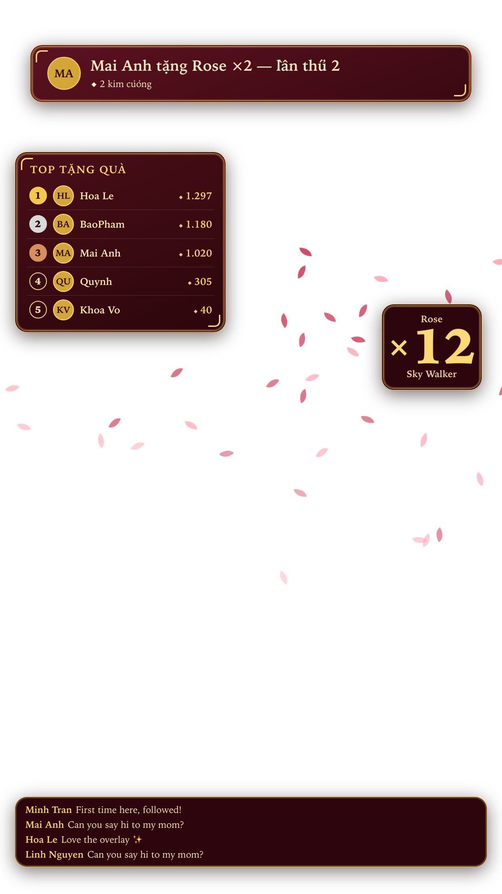
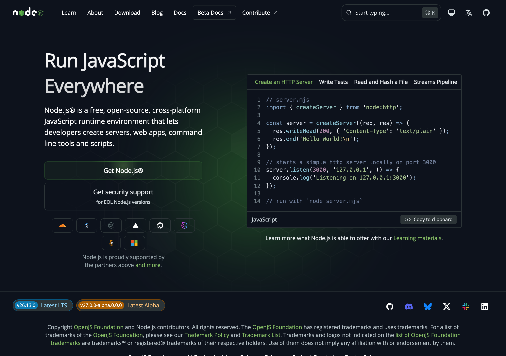
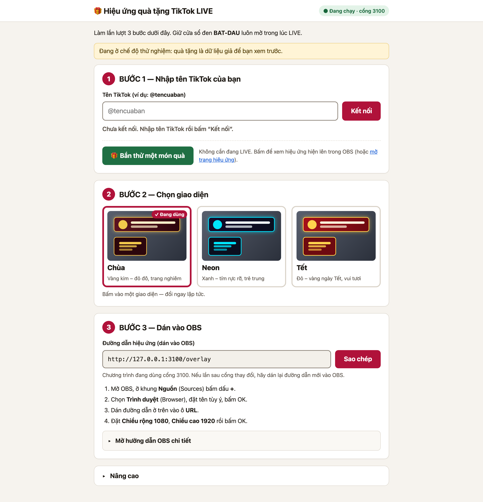
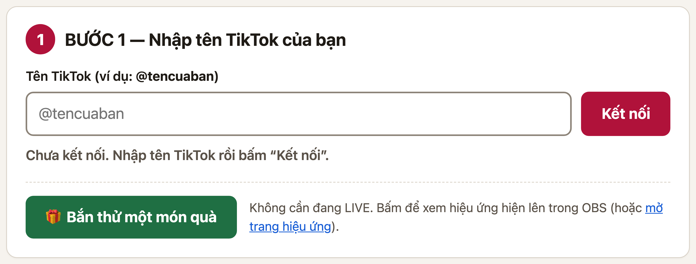
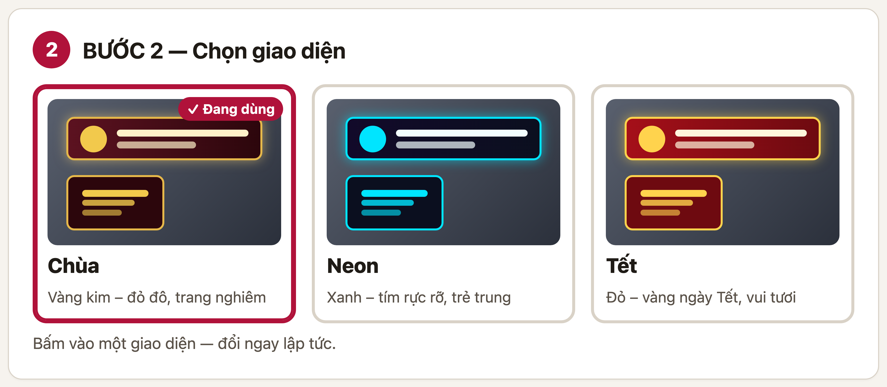
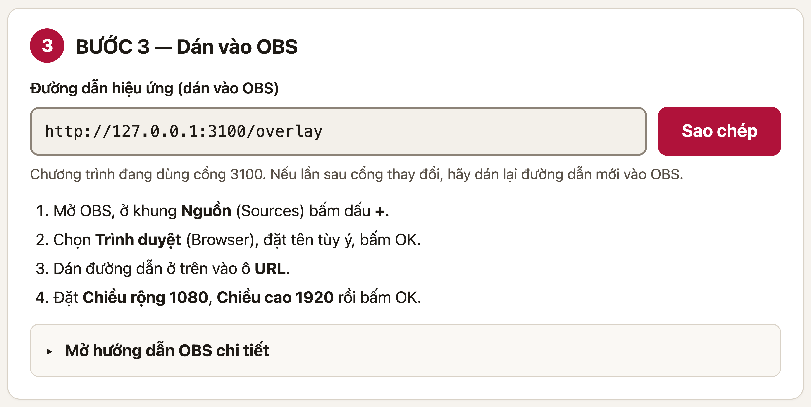
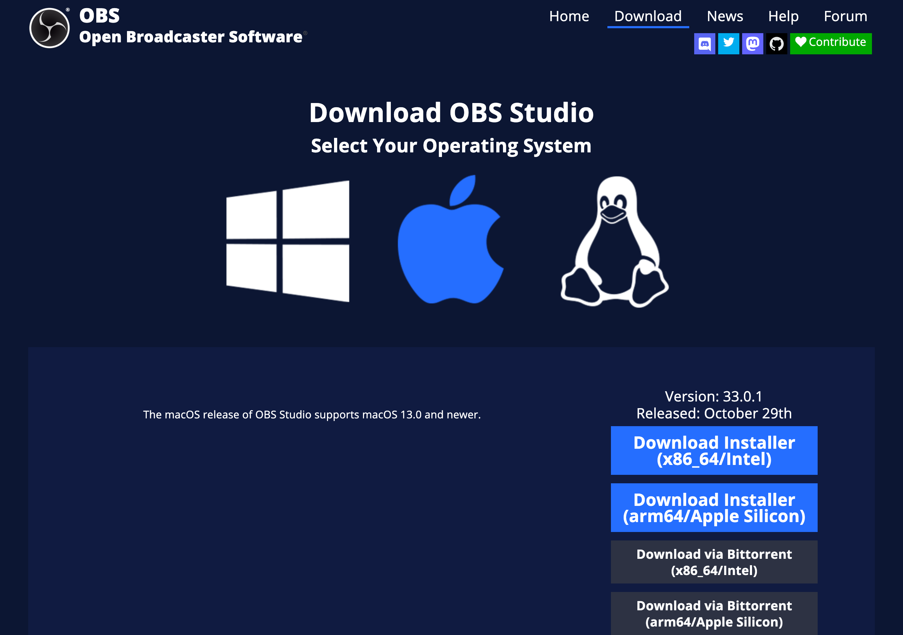
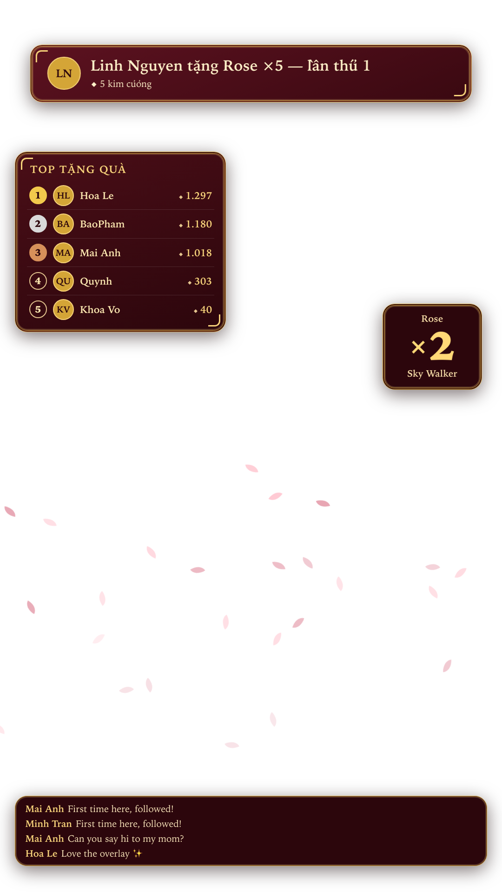
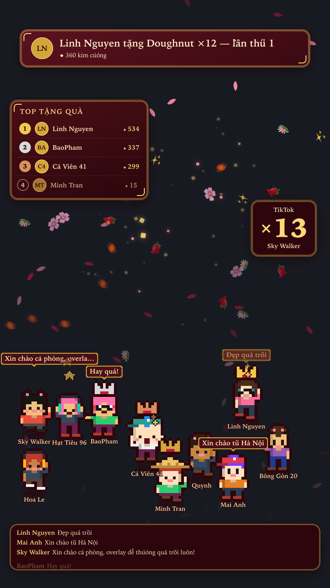

🎁
HƯỚNG DẪN SỬ DỤNG
Hiệu ứng quà tặng
TikTok LIVE
Dành cho người không biết gì về máy tính
Làm theo từng bước — không cần hiểu kỹ thuật
Phiên bản 1.0 · macOS và Windows
Thời gian cài đặt lần đầu: khoảng 10–15 phút
Sau đó mỗi lần dùng chỉ cần bấm đúp 1 lần
Bạn sẽ làm được gì sau khi đọc xong?
Khi bạn lên LIVE trên TikTok, người xem tặng quà — màn hình của bạn sẽ tự hiện hiệu ứng đẹp: tên người tặng, món quà, số lần họ đã tặng, bảng xếp hạng người tặng nhiều nhất, và hoa rơi.

Đây là những gì khán giả sẽ thấy trên màn hình LIVE của bạn
Bốn thứ hiện lên trên màn hình
| Thành phần | Nó làm gì |
|---|
| Băng rôn quà tặng | Hiện tên người tặng + món quà + "lần thứ mấy" họ đã tặng bạn |
| Bảng xếp hạng | Top 5 người tặng nhiều nhất, tự sắp xếp lại mỗi khi có quà mới |
| Hiệu ứng hoa rơi | Cánh hoa bay khi có người tặng quà — quà càng lớn hoa càng nhiều |
| Bộ đếm quà liên tiếp | Con số nhảy lên khi ai đó tặng liên tục nhiều món |
Điều quan trọng nhất cần hiểu
Chương trình này không phải app trên điện thoại. Nó chạy trên máy tính (laptop/PC), rồi bạn dùng phần mềm OBS để đưa hình lên buổi LIVE TikTok. Máy tính làm "bộ não", OBS làm "màn hình".
Mục lục
1Chuẩn bị — bạn cần những gìtrang 4
2Cài Node.js (làm một lần duy nhất)trang 5
3Tải và mở chương trìnhtrang 6
4Chạy chương trình lần đầutrang 7
5Bảng điều khiển — 3 bướctrang 8
6Cài OBS và đưa hiệu ứng lên LIVEtrang 11
7Thử trước khi lên LIVE thậttrang 13
8Lên LIVE thậttrang 14
9Nhân vật pixel — mỗi người xem một nhân vậttrang 15
10Khi có trục trặc — cách sửatrang 16
10↳ Hai lỗi kết nối khó nhất & API keytrang 17
11Những điều cần biết trước khi dùngtrang 20
★Tóm tắt một trang — in dán lên tườngtrang 21
Cách đọc tài liệu này
Đừng đọc hết một lượt. Cứ làm theo từng trang: đọc trang nào, làm đúng trang đó, xong rồi mới sang trang tiếp theo. Nếu bị kẹt, mở Chương 10 — Khi có trục trặc.
Ba ký hiệu bạn sẽ gặp
⬤ Chữ vàng = thứ bạn cần bấm hoặc gõ ·
⬤ Ô xanh lá = mẹo giúp dễ hơn ·
⬤ Ô cam = cẩn thận, dễ sai
1 · Chuẩn bị — bạn cần những gì
Trước khi bắt đầu, hãy kiểm tra bạn đã có đủ 4 thứ này. Thiếu cái nào thì bổ sung cái đó trước.
| ✓ | Bạn cần | Vì sao cần |
|---|
| ☐ | Máy tính
(macOS hoặc Windows) | Không dùng điện thoại được. Máy cần còn trống khoảng 1GB. |
| ☐ | Internet ổn định | Để tải phần mềm lần đầu và để kết nối với TikTok. |
| ☐ | Tài khoản TikTok đã bật LIVE | Chương trình cần biết phòng live của bạn để đọc quà tặng. |
| ☐ | OBS Studio | Phần mềm miễn phí dùng để đưa hiệu ứng lên buổi LIVE. |
Vì sao cần OBS? Có thể bỏ qua được không?
Không bỏ qua được. TikTok không cho phép chương trình bên ngoài vẽ trực tiếp lên màn hình LIVE. Cách duy nhất là dùng OBS làm "cầu nối": OBS nhận hiệu ứng từ chương trình, rồi OBS phát toàn bộ lên TikTok.
Hình dung đơn giản
Giống như bạn muốn chiếu phim lên tường: chương trình là đầu đĩa, OBS là máy chiếu, TikTok LIVE là bức tường. Thiếu máy chiếu thì phim không lên tường được.
Bạn sẽ cần làm 2 việc "cài đặt" — chỉ một lần duy nhất
- Node.js — một phần mềm nền, miễn phí. Giống như cài Zalo hay Chrome vậy. Cài một lần, không bao giờ phải làm lại.
- OBS Studio — phần mềm phát LIVE, miễn phí. Cũng cài một lần.
Sau khi cài xong 2 thứ này, mỗi lần muốn dùng bạn chỉ cần bấm đúp 1 file duy nhất — không phải cài lại gì nữa.
Mẹo
In trang này ra hoặc để điện thoại bên cạnh, vừa làm vừa tick vào ô ☐. Người mới thường bị rối vì quên mình đang ở bước nào.
2 · Cài Node.js (làm một lần)
Đây là bước "khó" nhất của cả tài liệu. Nhưng thật ra nó chỉ giống như cài một ứng dụng bình thường: tải về → mở → bấm Tiếp tục vài lần → xong.
- Mở trình duyệt (Chrome, Safari, Cốc Cốc — cái nào cũng được) và gõ địa chỉ:
nodejs.org
- Tìm nút màu xanh lá có chữ LTS — nó thường nằm bên trái, ghi "LTS" hoặc "Long Term Support". Bấm vào đó để tải.
Chọn đúng nút
Có 2 nút. Bạn chọn nút LTS (ổn định). Đừng chọn nút "Current" (bản thử nghiệm).
- Chờ tải xong (khoảng 30 giây – 2 phút tuỳ mạng). File tải về thường nằm ở thư mục Tải về / Downloads.
- Mở file vừa tải (bấm đúp vào nó) và bấm Tiếp tục / Continue / Next cho đến khi hết. Không cần đổi bất kỳ lựa chọn nào.
- Kiểm tra đã cài xong: không cần làm gì cả — nếu bạn đã bấm hết các bước, nó đã xong.

Trang nodejs.org — bấm nút LTS màu xanh lá (ảnh chụp thật)
Nếu máy hỏi mật khẩu
Trên macOS, khi cài có thể máy yêu cầu nhập mật khẩu máy. Đó là mật khẩu bạn dùng để mở khoá máy tính — gõ vào là được. Không phải mật khẩu TikTok.
3 · Tải và đặt chương trình vào máy
Chương trình là một thư mục nhỏ. Bạn chỉ cần để nó ở đâu đó dễ tìm, ví dụ ngay trên Desktop hoặc trong thư mục Documents.
- Tải thư mục chương trình về máy. Nếu bạn nhận được file nén (đuôi
.zip), bấm đúp vào nó để giải nén.
- Kéo thư mục vừa giải nén ra Desktop cho dễ tìm. Bạn sẽ thấy bên trong có một file tên BAT-DAU.command (trên macOS) hoặc BAT-DAU.bat (trên Windows).
- Đừng đổi tên, đừng di chuyển file BAT-DAU ra khỏi thư mục đó. Nó phải nằm cùng chỗ với các file khác.
Đừng làm những điều này
✗ Đừng tách file BAT-DAU.command ra Desktop riêng lẻ
✗ Đừng đổi tên thư mục thành có dấu cách lạ hoặc ký tự đặc biệt
✗ Đừng xoá các thư mục con bên trong (src, public…)
Nếu macOS không cho mở file
Lần đầu bấm đúp, macOS có thể hiện thông báo kiểu "không thể mở vì không xác định được nhà phát triển". Đây là bảo vệ bình thường của Apple với file tải từ Internet. Cách xử lý:
- Chuột phải (hoặc giữ phím
Control rồi bấm) vào file BAT-DAU.command
- Chọn Open / Mở trong menu vừa hiện ra
- Hộp thoại hiện lại → bấm Open lần nữa
Sau lần này, các lần sau chỉ cần bấm đúp bình thường.
Mẹo — nếu vẫn không mở được
Mở System Settings → Privacy & Security → cuộn xuống tìm dòng nhắc về BAT-DAU → bấm Open Anyway.
4 · Chạy chương trình lần đầu
Đây là lần duy nhất bạn phải chờ lâu (khoảng 1–3 phút) vì máy phải tải thêm vài thành phần phụ. Các lần sau mở rất nhanh.
- Bấm đúp vào file BAT-DAU.command
- Một cửa sổ màu đen (gọi là Terminal) sẽ hiện ra, chữ xanh trắng chạy lên. Đừng hoảng — đây là bình thường.
- Bạn sẽ thấy dòng chữ: "Lần chạy đầu tiên: đang tải các thành phần cần thiết…" → chờ 1–3 phút, đừng tắt cửa sổ.
- Khi tải xong, chương trình tự mở trình duyệt với Bảng điều khiển. Đồng thời cửa sổ Terminal hiện dòng: "Đang chạy! Đừng đóng cửa sổ này"
Quan trọng nhất trong cả tài liệu
Cửa sổ đen (Terminal) phải luôn mở trong suốt buổi LIVE. Đóng nó = tắt chương trình = hiệu ứng ngừng hoạt động. Bạn có thể thu nhỏ nó xuống thanh dưới, nhưng đừng tắt.
Bạn sẽ thấy gì trên màn hình
| Cửa sổ Terminal | Trình duyệt (Bảng điều khiển) |
|---|
Hiện đường dẫn cần dán vào OBS, ví dụ:
http://127.0.0.1:3000/overlay |
Hiện 3 bước đánh số 1, 2, 3 để bạn làm lần lượt |

Bảng điều khiển mở ra tự động trong trình duyệt
Ghi lại đường dẫn này
Nếu chương trình báo "đang dùng cổng 3100" thay vì 3000 — không sao cả, chỉ là số khác. Nhưng bạn phải dùng đúng số đó khi dán vào OBS. Chép lại con số cho chắc.
5 · Bảng điều khiển — 3 bước
Bảng điều khiển có đúng 3 việc phải làm, đánh số 1, 2, 3. Làm từ trên xuống dưới.
Bước 1 — Nhập tên TikTok của bạn

Bước 1 trong bảng điều khiển
- Bấm vào ô trống có chữ mờ
@tencuaBan
- Gõ tên TikTok của bạn, có dấu @ phía trước. Ví dụ:
@nguyennhut
Bạn cũng có thể dán nguyên đường dẫn trang cá nhân TikTok, chương trình tự hiểu.
- Bấm nút đỏ Kết nối
- Chờ vài giây. Dòng chữ bên dưới sẽ đổi thành:
✓ Đã kết nối tới phòng live! → tốt, sang bước 2
✗ Không tìm thấy phòng live → xem Chương 9
Bắt buộc: bạn phải đang LIVE thì mới kết nối được
Chương trình chỉ đọc được quà khi buổi LIVE của bạn đang chạy. Nếu bạn chưa bật LIVE, nó sẽ báo "không tìm thấy phòng live" — đó là đúng, không phải lỗi.
Bước 2 — Chọn giao diện

Ba giao diện: Chùa · Neon · Tết — bấm vào để đổi ngay lập tức
| Giao diện | Phù hợp với |
|---|
| 🏮 Chùa | Màu vàng – đỏ đô, trang nghiêm. Hợp live tâm linh, chúc phúc, cầu an. |
| 💠 Neon | Xanh – tím rực rỡ. Hợp live game, ca hát, nói chuyện đêm. |
| 🧧 Tết | Đỏ – vàng ngày Tết, vui tươi. Hợp live bán hàng, chúc Tết. |
Không cần chọn đúng ngay
Đổi giao diện bất cứ lúc nào, kể cả đang LIVE. Nó áp dụng ngay lập tức, không cần khởi động lại. Cứ thử cả ba rồi chọn cái bạn thích.
Bước 3 — Dán đường dẫn vào OBS

Bước 3 — nút "Sao chép" giúp bạn không phải gõ tay
- Bấm nút đỏ Sao chép — đường dẫn đã được copy sẵn
- Đừng đóng tab này. Chuyển sang OBS (Chương 6) và dán vào
Đường dẫn đó là gì?
Nó là "địa chỉ" để OBS tìm thấy hiệu ứng trên máy bạn. Dạng http://127.0.0.1:3000/overlay — nhìn đáng sợ nhưng bạn chỉ cần sao chép và dán, không phải hiểu nó.
6 · Cài OBS và đưa hiệu ứng lên LIVE
Nếu bạn chưa có OBS: vào obsproject.com → tải bản cho macOS hoặc Windows → mở file → bấm Next vài lần. Miễn phí, không cần đăng ký.

Trang tải OBS — chọn đúng hệ điều hành của bạn (ảnh chụp thật)
Thêm hiệu ứng vào OBS — 5 bước
- Mở OBS. Ở góc dưới trái có khung tên Nguồn / Sources (nếu không thấy, bấm dấu + ở dưới khung đó).
- Bấm dấu + màu đen ở góc dưới khung Nguồn.
- Một menu hiện ra → chọn Trình duyệt / Browser.
- Hộp thoại mới hiện ra:
| Ô cần điền | Điền gì |
|---|
| Tên / Name | Gõ gì cũng được, ví dụ Hieu ung qua |
| URL | Dán đường dẫn đã sao chép ở Bước 3 (bấm Cmd+V trên Mac hoặc Ctrl+V trên Windows) |
| Chiều rộng / Width | 1080 |
| Chiều cao / Height | 1920 |
- Bấm OK. Xong — hiệu ứng đã nằm trong OBS.
Nếu hiệu ứng hiện ra quá to hoặc lệch
Trong OBS, bấm vào khung hiệu ứng rồi kéo các điểm ở 4 góc để thu nhỏ hoặc di chuyển. Giữ phím Shift khi kéo để không bị méo hình.
Hai cài đặt quan trọng phải kiểm tra
Bấm đúp vào dòng Hieu ung qua trong khung Nguồn để mở lại hộp thoại, rồi:
| Cài đặt | Phải để |
|---|
Tắt nguồn khi không nhìn thấy
(Shutdown source when not visible) | TẮT (không tick) |
Làm mới trình duyệt khi cảnh hoạt động
(Refresh browser when scene becomes active) | TẮT (không tick) |
Vì sao phải tắt 2 cái này
Nếu để bật, OBS sẽ khởi động lại hiệu ứng mỗi lần bạn đổi cảnh — và bảng xếp hạng sẽ bị xoá sạch. Người tặng quà nhiều sẽ thấy mình biến mất khỏi bảng. Tắt đi là an toàn nhất.
Muốn chắc chắn hiệu ứng chạy đúng?
Trong khung Nguồn, chuột phải vào Hieu ung qua → chọn Interact / Tương tác. Một cửa sổ hiện ra cho bạn thấy đúng những gì OBS đang nhận. Nếu thấy chữ "Đang chờ quà tặng…" là đã kết nối đúng.
7 · Thử trước khi lên LIVE thật
Đừng bao giờ lên LIVE lần đầu mà chưa thử. Bước này giúp bạn biết chắc mọi thứ chạy đúng — mà không cần ai tặng quà thật.
Cách thử — không cần đang LIVE
- Trong bảng điều khiển, tìm nút xanh lá Bắn thử một món quà (nằm ngay dưới Bước 1).
- Bấm vào nút đó vài lần.
- Nhìn sang OBS — bạn sẽ thấy băng rôn quà tặng hiện lên, hoa rơi, và bảng xếp hạng bắt đầu có tên.

Trước khi có quà: hiệu ứng hiện dòng nhắc nhẹ "Đang chờ quà tặng…"
Checklist trước khi lên LIVE
| ✓ | Việc cần kiểm |
|---|
| ☐ | Cửa sổ Terminal vẫn đang mở |
| ☐ | Bảng điều khiển báo "Đã kết nối tới phòng live" |
| ☐ | Bấm "Bắn thử một món quà" → thấy hiệu ứng trong OBS |
| ☐ | Bảng xếp hạng hiện đúng tên và số quà |
| ☐ | Đã chọn giao diện ưng ý |
Đã thử xong?
Bấm nút Xoá / Clear trong phần Nâng cao để dọn sạch dữ liệu thử, rồi mới lên LIVE thật. Nếu không, bảng xếp hạng sẽ bắt đầu với mấy cái tên giả.
8 · Lên LIVE thật
Mọi thứ đã sẵn sàng. Đây là thứ tự đúng khi bắt đầu buổi LIVE.
- Mở Terminal trước — bấm đúp BAT-DAU.command, chờ bảng điều khiển tự mở.
- Mở OBS — kiểm tra khung hiệu ứng vẫn còn trong danh sách Nguồn.
- Bật LIVE trên TikTok (trên điện thoại hoặc trên máy, bằng OBS hoặc app TikTok — tuỳ cách bạn vẫn làm).
- Quay lại bảng điều khiển → nhập tên TikTok → bấm Kết nối → chờ dòng "Đã kết nối tới phòng live!".
- Bắt đầu nói chuyện với khán giả. Khi có người tặng quà, hiệu ứng tự chạy.
Thứ tự này quan trọng
Phải bật LIVE trước rồi mới bấm Kết nối. Làm ngược lại sẽ báo "không tìm thấy phòng live" — chỉ cần bật LIVE rồi bấm Kết nối lại, không phải khởi động lại chương trình.
Khi buổi LIVE kết thúc
- Ngừng phát LIVE trên TikTok như bình thường
- Đóng OBS
- Đóng cửa sổ Terminal (bấm dấu ✕, hoặc
Ctrl+C)
Xong. Dữ liệu cũ sẽ tự mất khi mở lại — mỗi buổi LIVE bắt đầu với bảng xếp hạng trắng.
Sau này mỗi lần dùng
Chỉ còn 2 bước
① Bấm đúp BAT-DAU.command → ② Nhập tên TikTok, bấm Kết nối.
Không phải cài lại gì. Không phải cấu hình lại OBS (OBS nhớ sẵn).
Đổi giao diện giữa buổi LIVE
Mở bảng điều khiển, bấm Bước 2, chọn giao diện khác. OBS tự cập nhật trong khoảng 1–2 giây. Không cần khởi động lại gì cả.
9 · Nhân vật pixel — mỗi người xem một nhân vật
Đây là phần vui nhất của chương trình, và bạn không phải cài thêm gì cả — nó đã có sẵn.

Chuyện gì xảy ra trên màn hình
| Khi khán giả… | Nhân vật của họ sẽ… |
|---|
| Lần đầu vào phòng (hoặc bình luận lần đầu) | Xuất hiện ở cuối màn hình, đi lại trong sân khấu |
| Tặng quà | Nhảy mừng; quà càng lớn nhảy càng mạnh, các nhân vật đứng gần quay sang vẫy tay |
| Bình luận | Hiện bong bóng nói chuyện phía trên đầu |
| Bấm tim / theo dõi bạn | Toả tim pixel, hoặc hiện ngôi sao |
| Đứng gần một nhân vật khác | Thỉnh thoảng hai người quay sang chào nhau |
| Là người tặng quà nhiều nhất | Đội vương miện vàng trên đầu |
Mỗi người một nhân vật, không trùng
Nhân vật sinh ra từ chính tên TikTok của người xem. Vào lại buổi sau vẫn đúng nhân vật đó — tóc, áo, mũ, phụ kiện y như cũ.
Chỉnh trong bảng điều khiển
Mục 👾 Nhân vật pixel có 4 nút:
- Hiện nhân vật pixel — công tắc bật/tắt toàn bộ. Tắt nếu thấy rối mắt.
- Số nhân vật tối đa — từ 1 đến 20 (mặc định 12). Phòng đông thì tăng, nhưng đừng tăng quá mức màn hình chịu được.
- Cỡ nhân vật — từ 1 đến 6. Tăng nếu khán giả xem trên điện thoại nhỏ.
- Thỉnh thoảng cả nhóm cùng nhảy — tắt nếu bạn thấy ồn ào.
Đổi là áp dụng ngay trong OBS, không phải khởi động lại.
Muốn xem thử trước khi LIVE?
Không cần đang phát sóng. Mở bảng điều khiển, bấm 👾 Bắn thử nhân vật — ba người xem giả hiện ra và chào nhau ngay trong khung OBS.
10 · Khi có trục trặc — cách sửa
Đây là những lỗi người mới gặp nhiều nhất. Tìm đúng triệu chứng của bạn rồi làm theo cách sửa.
Chương trình không mở được
| Triệu chứng | Cách sửa |
|---|
| Bấm đúp file mà không có gì xảy ra |
Chuột phải vào file → chọn Open. Nếu vẫn vậy: System Settings → Privacy & Security → bấm Open Anyway. |
| Cửa sổ đen hiện ra rồi tắt ngay |
Node.js chưa cài hoặc cài chưa xong. Làm lại Chương 2. Chương trình sẽ tự mở trang nodejs.org cho bạn. |
| Báo "KHÔNG TẢI ĐƯỢC THÀNH PHẦN CẦN THIẾT" |
Mất mạng giữa lúc cài. Kiểm tra wifi, rồi bấm đúp lại file. Nó sẽ tải tiếp, không làm lại từ đầu. |
Không kết nối được với TikTok
| Triệu chứng | Cách sửa |
|---|
| "Không tìm thấy phòng live" |
① Bạn chưa bật LIVE — đây là nguyên nhân số 1. ② Sai tên TikTok — kiểm tra lại có đúng @ và không có dấu cách. ③ Bấm Thử lại. |
| "Không kết nối được, thử lại sau" |
TikTok đang chặn tạm thời. Chờ 2–3 phút rồi bấm Thử lại. Nếu liên tục bị, tắt wifi bật lại. |
| Đã kết nối nhưng tặng quà không thấy hiện |
Mở OBS → chuột phải khung hiệu ứng → Interact. Nếu thấy "Đang chờ quà tặng…" mà không nhảy số, bấm Test gift trong phần Nâng cao để kiểm tra. |
Một câu tiếng Anh dài, có chữ Business plan hoặc SignatureMissingTokensError |
Xem trang sau — đây là lỗi riêng, cách sửa khác hẳn 4 lỗi trên. |
10 · Hai lỗi kết nối khó nhất
Hai lỗi này làm người mới hoang mang nhất, vì câu báo lỗi không giống tiếng Việt và không giống nguyên nhân thật.
Lỗi A — câu tiếng Anh có chữ "Business plan"
Nguyên văn bạn có thể thấy:
SignatureMissingTokensError … This endpoint requires a Business plan.
Nghĩa đen của nó
Chương trình không nói chuyện trực tiếp với TikTok. Nó phải nhờ một dịch vụ trung gian "ký giấy thông hành" để TikTok cho vào phòng live.
Dịch vụ đó cho dùng miễn phí có giới hạn số lần. Khi bạn bấm Kết nối quá nhiều lần trong thời gian ngắn, hết hạn mức → nó đòi gói trả tiền.
| Tình huống | Nên làm |
|---|
| Chỉ thấy 1–2 lần, sau đó bấm lại được |
Không sao cả. Chờ 60 giây rồi bấm Kết nối lại. Đây chỉ là nghẽn tạm thời. |
| Bấm lại vẫn y nguyên, lặp đi lặp lại |
Cần nhập API key miễn phí — xem trang ngay sau. Không phải trả tiền. |
Lỗi B — báo "không tìm thấy phòng live" nhưng bạn CHẮC CHẮN đang live
Đây là lỗi gây hiểu lầm nhiều nhất. Bốn nguyên nhân thật, xếp theo mức độ thường gặp:
| Nguyên nhân | Cách kiểm tra |
|---|
| ① Sai tên TikTok (nguyên nhân số 1) |
Tên phải đúng từng chữ, không dấu cách. Mở app TikTok → Hồ sơ → đọc đúng dòng có @. Đừng gõ tên hiển thị (tên có dấu tiếng Việt). |
| ② Live chưa thật sự phát |
TikTok LIVE Studio đang mở không có nghĩa là đang live. Phải bấm Go Live và thấy chấm đỏ trên màn hình. |
| ③ Live ở chế độ riêng tư |
Nếu buổi live chỉ dành cho người theo dõi, bên ngoài sẽ thấy bạn offline. Đổi sang Công khai. |
| ④ Live vừa kết thúc |
Kiểm tra bằng một điện thoại khác: mở TikTok, tìm tên bạn, xem có nhãn LIVE đỏ không. |
Cách thử nhanh nhất
Nhờ một người bạn đang live (hoặc mở live bằng tài khoản phụ) rồi nhập tên tài khoản đó vào chương trình.
• Nếu kết nối được → đường truyền và chương trình đều tốt, chỉ là tên tài khoản của bạn bị sai.
• Nếu cũng không được → vấn đề ở mạng hoặc chương trình, không phải ở tài khoản.
10 · Nhập API key miễn phí
Chỉ làm một lần. Mất khoảng 2 phút. Không cần thẻ ngân hàng, không mất tiền.
Chỉ làm khi được yêu cầu
Nếu chương trình vẫn kết nối bình thường thì bạn không cần phần này. Chỉ làm khi gặp Lỗi A ở trang trước và bấm lại nhiều lần vẫn không hết.
Các bước lấy key
- Mở trình duyệt, vào eulerstream.com/register
- Đăng ký bằng email hoặc Google. Không cần nhập thẻ.
- Vào mục Dashboard → tìm dòng API Key → bấm Copy.
- Quay lại bảng điều khiển của chương trình → mở mục Nâng cao → dán vào ô API key → bấm Lưu.
- Bấm Kết nối lại. Key được ghi nhớ cho những lần sau, không phải dán lại.
| Câu hỏi | Trả lời |
|---|
| Có mất tiền không? | Không. Gói miễn phí cho 2.500 lượt mỗi ngày — một buổi live chỉ dùng vài chục lượt. |
| Key có nguy hiểm không? | Key là của riêng bạn, đừng đưa cho người khác. Nó không chứa mật khẩu TikTok và không đăng được bài. |
| Có phải làm lại mỗi buổi live? | Không. Nhập một lần là chương trình tự dùng về sau. |
| Dán key rồi vẫn lỗi? | Kiểm tra đã bấm Lưu chưa, và đã tắt chương trình rồi mở lại chưa. Sau đó xem lại Lỗi B ở trang trước. |
Hiệu ứng không hiện trong OBS
| Triệu chứng | Cách sửa |
|---|
| Khung đen xì, không có gì |
Đường dẫn trong OBS sai. Quay lại bảng điều khiển, bấm Sao chép lần nữa (số cổng có thể đã đổi), rồi sửa lại URL trong OBS. |
| Chương trình đã tắt nhưng OBS vẫn hiện khung cũ |
Bình thường. Mở lại BAT-DAU.command là nó tự kết nối lại. |
| Hiệu ứng bị xoá sạch sau khi đổi cảnh |
Bạn chưa tắt "Shutdown source when not visible". Xem lại Chương 6, mục "Hai cài đặt quan trọng". |
| Chữ quá nhỏ khi xem trên điện thoại |
Trong OBS, kéo khung hiệu ứng to ra (giữ Shift khi kéo). Hoặc chọn giao diện có chữ đậm hơn. |
Vẫn không được?
Cách tự kiểm tra nhanh
Mở trình duyệt, gõ đúng đường dẫn overlay (ví dụ http://127.0.0.1:3000/overlay) rồi Enter.
• Nếu thấy trang trắng có bảng xếp hạng → chương trình OK, lỗi nằm ở OBS
• Nếu báo "không kết nối được" → chương trình chưa chạy, mở lại BAT-DAU.command
Mẹo cuối
Trước buổi LIVE quan trọng, hãy chạy thử toàn bộ quy trình 15 phút trước giờ bắt đầu. Đừng bao giờ cài đặt lần đầu ngay trước khi lên sóng.
11 · Những điều cần biết trước khi dùng
Phần này không bắt buộc đọc để chạy được, nhưng đọc để tránh rắc rối về sau.
Ba giới hạn kỹ thuật — nói thật
| Giới hạn | Nghĩa là gì với bạn |
|---|
| Phải giữ Terminal mở |
Tắt cửa sổ đen = tắt chương trình. Không có cách nào khác. |
| Dữ liệu mất khi tắt |
Bảng xếp hạng không được lưu lại. Mỗi buổi LIVE bắt đầu từ đầu. |
| Phụ thuộc TikTok |
Chương trình đọc dữ liệu qua một cách không chính thức. Nếu TikTok thay đổi hệ thống, chương trình có thể ngừng hoạt động và cần cập nhật. |
Những gì chương trình KHÔNG làm
- Không tự động chặn hay xoá bình luận xấu — bạn phải tự kiểm duyệt chat.
- Không đọc được tin nhắn riêng hay quà ngoài buổi LIVE.
- Không phát LIVE thay bạn — OBS mới làm việc đó.
- Không lưu lại lịch sử quà tặng giữa các buổi.
Về nội dung và quy định
TikTok có quy định riêng với nội dung tôn giáo, tín ngưỡng gắn với việc nhận quà tặng. Việc dùng hiệu ứng để kêu gọi tặng quà có thể vi phạm, tuỳ cách bạn dùng.
Chương trình này chỉ hiển thị quà người xem đã tặng — nó không tạo quà, không giả mạo người tặng, không tự động gửi tin nhắn. Nhưng bạn chịu trách nhiệm về cách mình sử dụng và nội dung buổi LIVE của mình.
Nếu bạn muốn chia sẻ chương trình cho người khác
Chương trình dùng thư viện tiktok-live-connector theo giấy phép AGPL-3.0. Nếu bạn chỉ dùng cho bản thân: không sao cả. Nếu bạn bán hoặc phát hành cho người khác dùng, bạn phải công khai mã nguồn theo cùng giấy phép đó.
Bản quyền hình ảnh và âm thanh
Nếu bạn ghép nền video cảnh chùa, ảnh, hay nhạc — hãy chắc chắn bạn có quyền dùng chúng. Tải video của người khác rồi phát lại có thể bị TikTok gỡ LIVE hoặc khoá kênh.
Tóm tắt toàn bộ — in trang này dán lên tường
Lần đầu tiên (10–15 phút)
| # | Làm gì | Xong khi |
|---|
| 1 | Tải và cài Node.js từ nodejs.org (nút xanh LTS) | Đã bấm hết các bước cài |
| 2 | Tải và cài OBS Studio từ obsproject.com | OBS mở được |
| 3 | Tải thư mục chương trình, đặt ra Desktop | Thấy file BAT-DAU.command |
| 4 | Bấm đúp BAT-DAU.command, chờ 1–3 phút | Bảng điều khiển tự mở trong trình duyệt |
| 5 | Bảng điều khiển → bấm Sao chép ở Bước 3 | Đã có đường dẫn trong bộ nhớ |
| 6 | OBS → Nguồn → + → Trình duyệt → dán URL, đặt 1080 × 1920 | Hiệu ứng hiện trong OBS |
| 7 | Bấm Bắn thử một món quà | Thấy băng rôn + hoa rơi trong OBS |
Mỗi lần dùng sau đó (1 phút)
| # | Làm gì | Xong khi |
|---|
| 1 | Bấm đúp BAT-DAU.command | Bảng điều khiển mở |
| 2 | Bật LIVE trên TikTok | Buổi LIVE đang chạy |
| 3 | Nhập tên TikTok → Kết nối | Báo "Đã kết nối tới phòng live!" |
| 4 | Mở OBS, bắt đầu phát | Khán giả thấy hiệu ứng |
Ba điều tuyệt đối không làm
1. Không đóng cửa sổ đen (Terminal) khi đang LIVE
2. Không tắt "Shutdown source when not visible" trong OBS (phải để TẮT)
3. Không bấm Kết nối trước khi bật LIVE TikTok
Cần giúp?
Mở lại tài liệu này ở Chương 9 — phần lớn lỗi đều có cách sửa trong đó. Nếu vẫn kẹt, ghi lại đúng dòng chữ lỗi bạn thấy trên màn hình rồi nhờ người hỗ trợ.